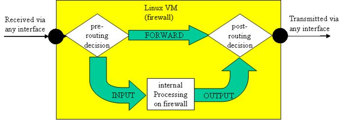
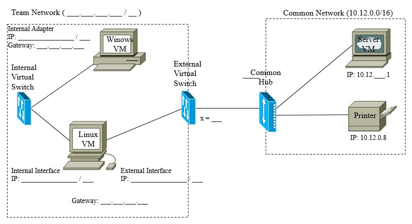
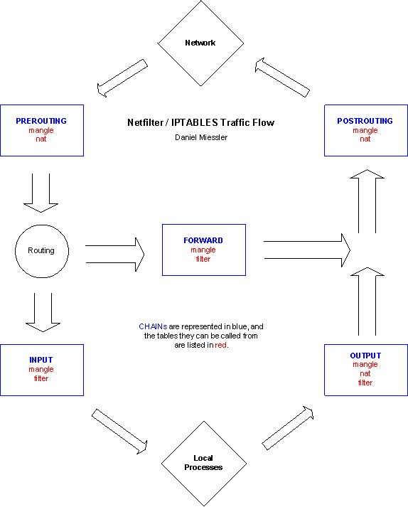

Ce labo vise à :
Ce labo vous aidera à devenir familier avec un coupe-feu réseau élémentaire. Un coupe feu est une passerelle de sécurité qui contrôle l’accèes entre un domaine administratif privé et l’Internet (RFC 2588).
Un coupe-feu a deux fonctions principales
Ce labo explore le filtrage de paquets. Nous examinerons la politique par defaut de coupe-feux et nous verrons comment ajuster un coupe-feu pour ne permettre le passage que des paquets nécessaire aux exigences opérationnelles. Nous discuterons le besoin pour la traduction d’adresse réseau afin de limiter le nombre d’adresses exposées à l’Internet externe et comment intégrer ce concept à un coupe-feu.
Un filtre de paquet est essentiellement une passerelle réseau agissant comme agent de circulation utilisant l’information des en-têtes de couche 3 et 4 pour décider quel paquet peut traverser le coupe-feu vers sa destination. Par exemple, le filtre de paquet peut permettre le passage (pass) des paquets d’une plage d’adresse réseau ou de ports et bloquer (drop) les paquets d’autres plages d’adresses ou de port. Le filtre décide selon un ensemble de règles (rules) qui peuvent utiliser n’importe quelle pièce d’information de l’en-tête (adresse IP, numéro de ports, fragmentation, type de protocole, indicateurs TCP, etc.) afin de prendre les décision de pass/drop.
On peut trouver plusieurs implémentations pour le filtrage de paquet, chacune ayant ses propres mécanismes et format pour les règles. Nous avons choisit un filtre de paquet Linux commun pour ce labo qui s’appelle iptables. iptables définit trois tables : filter, nat et mangle. Nous utiliserons la table filter, servant à faire le filtrage de paquet, dans la partie 1 du labo et nous discuterons de la table nat dans la partie 3.
Chaque table est composée de chaînes (chains) comme vous pouvez le voir à la figure 1. Lorsqu’un paquet arrive, il est traité par une processus de routage qui examine sa destination pour décider à laquelle de trois chaîne intégrée doit être utilisée pour traiter le paquet. La chaîne INPUT est utilisée pour les paquets destiné au coupe-feu lui même (le coupe-feu est une passerelle avec une ou plusieurs adresse IP). de façon similaire, La chaîne OUTPUT est utilisée pour les paquets qui sont originaires du coupe-feu lui même. Finalement, la chaîne FORWARD est utilisée pour les paquets qui traversent le coupe-feu, étant originaire d’un autre ordi et destiné à un autre ordi.

Une chaine est une liste de contrôle (check-list) de règles. Lorsqu’un paquet est traité par une chaîne, les règles de celle-ci sont appliquées séquentiellement. Si un paquet est conforme à un règle, on dit que la règle est engagée (fire) et le paquet est acheminé à la cible (target) de cette règle. Les règles communes sont :
iptables cesse le traitement d’une chaîne dès qu’une règle conforme exécute. Les règles sont examinées dans leur ordre de définition dans la chaîne; l’ordre de définition de règles est donc très important.
On appelle la dernière règle dans une chaîne sa politique. Puisque celle-ci est listée en dernier, elle sera toujours exécutée si le paquet passe toutes les règles précédentes. On peut imaginer cette politique comme étant l’action prise par défaut; la cible de cette politique peut être ACCEPT ou DROP.
Les systèmes mettant l’emphase sur la sécurité ont habituellement une politique de DROP (on bloque le paquet si on a un doute). Un paquet est donc bloqué, à moins qu’une règle lui permettant spécifiquement de passer exécute; on appelle ceci une liste-blanche (white-listing) puisqu’on liste spécifiquement les communications autorisées. D’un autre coté, les organisations qui désirent offrir le plus de services possible utilise une liste-noir (black-listing) où seulement les communications néfastes sont bloquées.
On peut ajouter des règles à la base de données d’iptables en utilisant la commande iptables. L’ajout d’une règle au coupe-feu aurait un format comme-ci :
iptables -A FORWARD -s 0/0 -i eth0 -d 192.168.1.58 -o internal -p TCP \
--sport 1024:65535 --dport 80 -j ACCEPT
Dans cette commande, le programme iptables ajoute (-A) un nouvelle règle à la chaîne FORWARD. La règle trouvera les paquets ayant n’importe quelle adresse comme source (-s 0/0) ayant comme destination l’adresse IP 192.168.1.58 (-d 192.168.1.58). Pour que la règle exécute, le paquet doit avoir été reçu à l’adaptateur eth0 (-i eth0) et il doit être ré-transmis de l’adaptateur internal (-o internal). La règle spécifie également que le paquet doit être de type TCP destiné au port 80 et provenant d’un port de la plage 1024 à 65535 qui est un port éphémère (-p TCP --sport 1024:65535 --dport 80). La cible de la règle est ACCEPT, qui veut dire que les paquets qui se conforme à la règle pourront traverser le coupe-feu vers leur destination (-j ACCEPT). Vous remarquerez également que cette longue règle prend plus d’une ligne de texte; la barre oblique inversée ‘', est utilisée pour indiquer que la définition de la règle continue à la prochaine ligne.
Vous allez configurer un petit réseau et vous utiliserez iptables comme filtre de paquets pour protéger celui-ci. Dans la partie 2 du labo, vous allez progressivement ajouter des règles à votre coupe-feu; vous apprendrez comment bâtir des règles de plus en plus complexes et comment celles-ci permette le passage ou le blocage de différents types de trafic. Pour en connaître plus sur iptables, consultez le packet-filtering HOWTO (English - Français).
On utilise habituellement un ordi avec au moins deux adaptateurs comme coupe-feu; un adaptateur est pour le segment externe et les autres sont utilisés pour les segments internes à protéger. Dans ce labo, votre Linux VM servira de coupe-feu puisque celui-ci a deux adaptateurs : un connecté au commutateur virtuel externe que vous avez utilisé pour vous connecter au réseau commun et un autre connecter au commutateur virtuel interne que vous avez utilisé pour vous connecter à la Windows VM. Dans ce labo, la Windows VM représentera le réseau interne que vous protégez à l’aide d’un coupe-feu. Soyez bien certain de déconnecter l’adaptateur External de votre Windows VM.
Configurez votre réseau selon les spécification suivante, et annotez la figure 2 de façon appropriée. Comme vous devez inclure celle-ci dans votre rapport de labo, nous vous donnons le fichier source.

Configurez votre Linux VM pour qu’elle agisse à titre de routeur pour votre réseau (comme vous l’avez fait pour le labo 5) avec les commandes suivantes :
sysctl -a | grep ip_forward
sudo sysctl net.ipv4.ip_forward=1
sysctl -a | grep ip_forward
Notez que les instructeurs ont ajouté des routes au routeur du Réseau commun lui disant que votre coupe-feu/routeur est la passerelle de votre Réseau d’équipe. Soyez-bien certain de comprendre pourquoi ceci est nécessaire.
Une fois votre réseau configuré, utilisez ping pour être certain que votre Windows VM a la bonne connectivité jusqu’au Server VM, de par l’entremise de votre Linux VM.
Le dépannage d'un pare-feu peut être un problème complexe. Apprendre à réagir et à résoudre les problèmes lorsqu'un pare-feu ne se comporte pas comme prévu est tout aussi important que d'apprendre quelles règles écrire et comment. Si vous rencontrez des problèmes avec votre pare-feu dans le laboratoire, J'attends de vous que vous tentiez de le résoudre. Les instructeurs de laboratoire sont heureux de vous aider, mais on s'attend à ce que vous essayiez d'abord de résoudre le problème vous-même. Même si vous ne réussissez pas, vous serez en mesure de mieux fournir à l’instructeur les informations dont il a besoin pour vous aider.
sudo tcpdump -i internal_interface -nv 'port 23 and net 10.12.x'sudo tcpdump -i external_interface -nv 'port 23 and net 10.12.x'(#1) Votre rapport doit inclure une petite capture de paquets qui montre votre Linux VM agissant comme un routeur. La capture doit nous démontrer un paquet qui est acheminé par la Windows VM au Server VM. Mettez en valeur la différence entre les paquets entrant et sortant du routeur.(#2) Faites commentaires sur votre configuration de réseau. Nous sommes particulièrement intéressé à savoir quelles étapes vous ont données des problèmes.
Vous avez maintenant un réseau à protéger, et nous pouvons maintenant examiner iptables en plus de détails. Commençons en examinant la configuration de base de iptables ainsi que ses politiques.
sudo iptables -nvLroot; vous allez créer un alias afin de ne pas avoir à toujours tapez sudo cd ~
chmod 755 iptables_rules.sh
En Linux, chaque fichier possède un ensemble de permissions associées avec le propriétaire du fichier, le groupe du propriétaire et les reste du monde (world). Pour chacun de ceux-ci, on spécifie les permission pour lire (r pour read), écrire (w pour write) ou bien exécuter (x pour execute) le fichier en utilisant un masque de 3 bits qu’on représente comme un chiffre décimal entre 0-8. 755 donne les permissions rwx au propriétaire et rx à tout autres. Consultez le manuel de chmod sur votre Linux VM ou en références pour plus de détails.
#!/bin/sh
alias iptables='sudo iptables'
iptables --flush
iptables --policy INPUT DROP
iptables --policy FORWARD DROP
iptables --policy OUTPUT DROP
#append rules here:
#display rules
iptables -nvL
flush) toutes les règles présentes dans les chaînes
--policy implémente une politique de liste-blanche.iptables# est utilisé pour une ligne commentaire./iptables_rules.shEssayez de faire ping ou d’utiliser telnet entre les Windows VM, Linux VM ou Server VM; vous devriez avoir perdu toute connectivité. (#3) Utilisez deux instances de tcpdump sur votre coupe-feu pour enregistrer tout le trafic et expliquez pourquoi vous avez perdu la connectivité.
Vous avez un coupe-feu, mais il n’est pas très propice aux communications. Vous devrez ajouter des règles permettant à certains types de trafic spécifiques de le traverser. Les règles ne devraient permettre que le passage de trafic que nous avons déclaré comme valide à notre liste-blanche; tout autre paquets doivent être bloqués.
Nous utilisons ping pour dépanner nos connexions. Pour ce faire, nous allons permettre aux paquets ICMP echo-request de quitter notre coupe-feu, et nous allons permettre au echo-reply de revenir vers celui-ci. Nous ne permettrons à aucune autre machine de faire ping au coupe-feu.
iptables_rules.sh et sauvegardez le :
iptables -A OUTPUT -p icmp --icmp-type echo-request -j ACCEPT
iptables -A INPUT -p icmp --icmp-type echo-reply -j ACCEPT
(#4) Utilisez man iptables pour examiner les options utilisées dans cette commande afin d’obtenir une appréciation de la création d’une règle. Fournissez un sommaire des options utilisées par la commande dans votre rapport../iptables_rules.sh
Essayez maintenant de faire ping du Linux VM au Server VM et du Linux VM au Windows VM. Puisqu’on a pas spécifié d’adaptateurs dans nos règles, on peut faire ping à l’internet et à l’externe.
Lorsqu’on bâtit un coupe-feu, il est souvent désirable de pouvoir fabriquer des paquets spécifiques pour tester sa configuration. Le programme hping3 permet de créer des paquets personnalisés et de les transmettre sur un adaptateur. hping3 requiert les privilèges de root, puisqu’il peut potentiellement être utilisé à fins malicieuses. Nous vous suggérons de lire le manuel de hping3, de votre Linux VM ou de la référence, pour devenir familier avec son utilisation.
Essayez d’utiliser hping3 avec l’option --icmp pour tester votre configuration de coupe-feu; essayez de nouveau, mais utilisez le comportement défaut de hping3 sans l’option --icmp.Vous devriez remarquer qu’il y a une erreur.
(#5) Que s’est il passé ? Comme le message d’erreur n’est pas très utile, utilisez tcpdump pour observer le trafic et discutez du problème dans votre rapport.
hping3 est très utile; utilisez-le lorsque votre coupe-feu ne se comporte pas comme prévu.
Nous allons maintenant ajouter des règles pour permettre à la Windows VM (ou tout autre machine qui serait sur le Réseau d’équipe) de faire ping vers le monde extérieur (c.a.d. envoyer des echo-request au travers du coupe-feu et recevoir des echo-reply au travers de celui-ci).
iptables -A FORWARD -s 10.30.x.0/24 -p icmp --icmp-type echo-request -j ACCEPT
iptables -A FORWARD -d 10.30.x.0/24 -p icmp --icmp-type echo-reply -j ACCEPT
./iptables_rules.shEssayez maintenant de faire ping au Server VM de votre Windows VM; le tout devrez fonctionner. (#6) Utilisez tcpdump pour dépanner et indiquez tout problème dans votre rapport
Finalement, nous allons ajouter des règles permettant à notre Windows VM de faire connexion telnet au Server VM
iptables -A FORWARD -s 10.30.x.0/24 -p tcp --dport 23 -j ACCEPT
iptables -A FORWARD -d 10.30.x.0/24 -p tcp --sport 23 -j ACCEPT
./iptables_rules.shTestez vos règles en faisant connexion telnet de votre Windows VM au compte d’alice sur le Server VM. Soyez bien de comprendre pourquoi ces règles permettent à la connexion telnet de traverser le coupe-feu, tout en bloquant tout autre trafic TCP. essayez de faire ping du compte d’alice sur le Server VM vers votre Windows VM pour constater que le trafic dans cette direction est bien bloqué.
(#7) Expliquez pourquoi deux règles sont nécessaire dans votre rapport.
Les règles permettant la connexion telnet semblent bien simple, mais elles sont trop génériques; elles créent en effet un trou dans notre coupe-feu qui peut donner accès à notre réseau à des attaquants. Ceux-ci peuvent utiliser le fait que nous permettons à tout le trafic TCP avec le port source 23 de traverser le coupe-feu pour rejoindre le Réseau d’équipe de façon malicieuse. Les attaquants tentent souvent d’utiliser du trafic traversant le coupe-feu pour faire reconnaissance d’un réseau, comme nous pouvons le démontrer à l’aide de hping3. Utilisons le Server VM pour représenter un attaquant malicieux à l’extérieur de notre enclave protégée; vous pouvez utiliser une connexion telnet avec le Server VM de votre Windows VM avec le compte d’alice puisque alice a accès à hping3. Essayez le tout avec les ports 53, 139, 445, et 12000.
sudo hping3 -c 1 --syn --baseport 23 --destport 53 10.30.x.20Utilisez tcpdump pour observer ce qui ce passe (vous aurez avantage à utiliser des filtres avec tcpdump pour éliminer le trafic telnet entre votre Windows VM et votre Server VM). Le comportement observé n’est pas le même pour tout les ports testés; vous pouvez faire un balayage de l’ordi interne au travers du coupe-feu dans certains cas!
(#8) Fournissez une explication des comportements différents dans votre rapport; Et expliquez comment des hackers pourraient utiliser ceci pour scanner votre réseau.
Afin de boucher ce trou, et en interdisant ainsi le trafic essayant de se masquarader comme du trafic telnet légitime sur le port 23, nous pouvons modifier nos règles.
iptables_rules.sh et sauvegardez le :
iptables -A FORWARD -s 10.30.x.0/24 -p tcp --dport 23 -m state --state NEW,ESTABLISHED \
-j ACCEPT
iptables -A FORWARD -d 10.30.x.0/24 -p tcp --sport 23 -m state --state ESTABLISHED \
-j ACCEPT
./iptables_rules.shLes changements que vous venez de faire transforme votre coupe-feu en coupe-feu dynamique (stateful firewall). Le coupe-feu note maintenant certains paramètres (tel les adresses IP, les ports, etc) associés avec chaque connexion TCP au port 23 de notre Réseau d’équipe à une adresse externe. Les paquets associés avec une connexion établie (ESTABLISHED) seront les seuls à pouvoir traverser le coupe-feu. Les paquets venant de l’externe vers notre Réseau d’équipe n’appartenant pas à une connexion établie seront bloqués.
(#9) Essayez votre technique de balayage SYN de hping3 de nouveau pour voir si votre coupe-feu dynamique fonctionne. En utilisant vos propres mots, expliquez en quoi le coupe-feu est maintenant ‘dynamique’; Cela vous aidera de comparer son comportement avec un coupe-feu statique.
(#10) Vous allez remarquer que vous ne pouvez pas avoir accès à l’interface Web de l’imprimante; expliquez pourquoi vous ne pouvez pas le faire, et dites-nous ce que vous devriez faire pour remédier à la situation. Il serait peut être utile de rechercher quel port est utilisé par une interface Web.
Souvenez-vous que nous avons examiné les chaînes FORWARD, INPUT et OUTPUT du coupe-feu iptables/netfilter (en bleu dans la figure 3). Ces chaînes font partie d’une table appelée filter. Vous n’avez pas eu à spécifier cette table lorsque vous avez composé vos règles iptables puisque c’est la table de défaut. iptables/netfilter utilise deux autres tables (en rouge dans la figure 3) appelées nat et mangle tables. La table mangle est utilisée pour modifier les paquets en changeant une partie de leur en-tête TCP; nous n’en discutons pas plus ici
Deux chaînes peuvent être appelées de la table nat : PREROUTING et POSTROUTING. Les paquets sont traités par ces chaînes immédiatement avant (pour PREROUTING) ou immédiatement après (pour POSTROUTING) le traitement par les chaînes FORWARD, INPUT or OUTPUT de la table filter.

Souvenez-vous que les cibles principales des règles de la table filter sont DROP ou ACCEPT. Les cibles principales de la table nat sont MASQUERADE, SNAT ou DNAT. La cible MASQUERADE est habituellement utilisée sur la chaîne POSTROUTING puisqu’elle cause la substitution de l’adresse IP source du paquet par une autre adresse (celle du coupe-feu par défaut). MASQUERADE note ces substitutions pour pouvoir modifier les paquets reçus en réponse de l’externe afin qu’ils soit acheminés au bon ordi interne. Les cibles SNAT et DNAT sont utilisées pour spécifier des traductions d’adresses source ou destination respectivement.
Vous allez maintenant configurer votre coupe-feu pour cacher tout votre Réseau d’équipe derrière l’adresse externe du coupe-feu (10.12.x.30). Avant de procéder, soyez bien certain de comprendre les adresses source et destination du trafic telnet de la partie 2.
Retournez au terminal que vous utilisez pour gérer votre coupe-feu et imprimez les règles nat courantes; il ne devrait pas y en avoir :
sudo iptables -nvL -t nat
(#11) Ajoutez maintenant une règle de masquerade à votre fichier iptables_rules.sh (assurez-vous de bien commenter votre script puisque vous devez le soumettre avec votre rapport)
iptables -t nat --flush
iptables -A POSTROUTING -t nat -o external_interface -s 10.30.x.0/24 -d 0/0 -j MASQUERADE
iptables -nvL -t nat
Exécutez votre script pour rafraichir les règles :
./iptables_rules.shSoyez bien certain que vous comprenez chaque partie de cette règle. La commande ajoute une règle à la chaîne POSTROUTING de la table nat, qui se conforme aux paquets sortant de l’adaptateur externe et provenant du sous-réseau 10.30.x.0/24 et destinés à un autre réseau. La cible de cette règle (c’est-à-dire l’action a prendre lorsque la règle est déclenchée) et de MASQUERADE; c’est-à-dire de substituer l’adresse IP de source avec l’adresse IP du coupe-feu, et d’enregistrer cette substitution à une table afin d’acheminer les paquets reçus en réponse.
(#12) Faites de nouveau une connexion telnet de votre Windows VM au compte d’alice de votre Server VM. Examinez les adresses de source et de destination de chaque côté du coupe-feu. Faites commentaires sur ce les différence que vous observe du comportement de la question (#1) dans votre rapport, et incluez une capture de trafic dans celui-ci.
Une fois que vous êtes confiants que vous avez tout ce dont vous avez besoin pour votre rapport de labo, suivez les instructions du préambule pour éteindre vos VMs et fermez votre session avec l’ordi hôte. Soyez bien certain de laisser la cage dans le même état que vous l’avez trouvé, et demandez à l’instructeur la combinaison de la clé si vous désirez travaillez hors la session de labo.
Votre rapport est à remettre Mercredi 17 Mars avant 14h00. Votre rapport doit suivre le modèle suivant. Vous devez nommer votre rapport de la façon suivante : GEF330_lab6_NomEtudiant1_NomEtudiant2.zip Pour ce labo, votre rapport doit contenir :